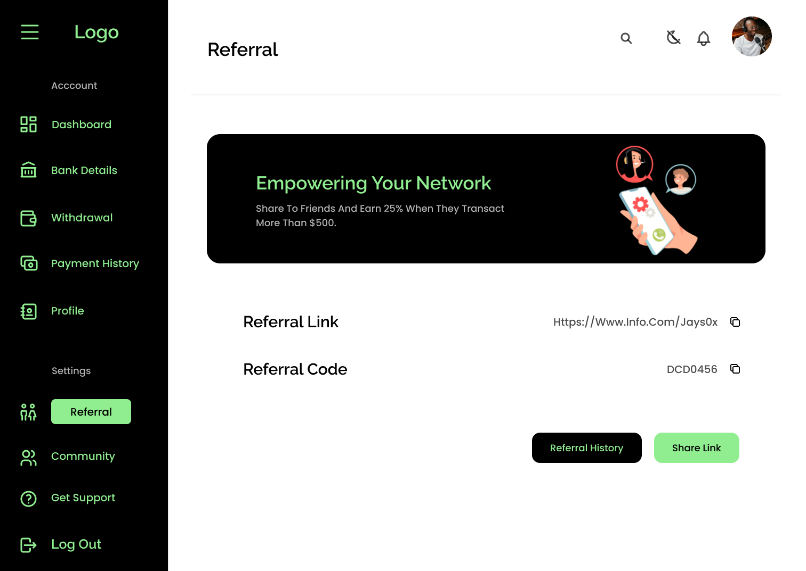
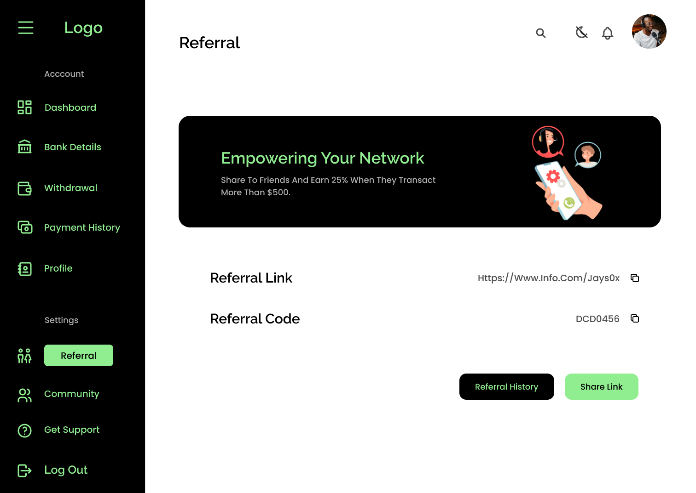

Streamlining Payments with FalconPay: A Finance Application
The best solution for freelancer and salary earners to receive money anytime


 


Project Overview
Project Objective
The objective of this project is to develop a finance app that will allow freelancers, clients and employers to receive and make payments easily and securely. The app will be designed to cater to the needs of freelancers who are working on different platforms and would like to manage their finances in one place. Additionally, the app will also benefit employers and clients who would like to pay freelancers and manage their expenses.
Problem Statement
In many parts of Africa, receiving payments from abroad is a major challenge for both employees and freelancers. The lack of reliable and accessible payment methods has resulted in a significant barrier for those seeking to receive payments from clients and employers outside of their country. The absence of a widely accepted and trusted payment platform, such as PayPal, has further compounded this issue, leaving many without a reliable and secure option for receiving payments.
Possible Solutions
The app will have a user-friendly interface that is easy to navigate and use. Users will be able to manage their finances, track their payments and expenses with ease.
The app will have a secure payment gateway that will ensure all transactions are safe and secure. Users will be able to transact with confidence, knowing that their information is protected.
The app will provide users with detailed reports and analytics on their earnings, expenses, and transactions. This will help users make better financial decisions and manage their finances more effectively.
The app will be integrated with popular freelance platforms such as Upwork, Freelancer and Fiverr. This will allow freelancers to easily receive payments from clients on these platforms and manage their finances in one place.
The app will support multiple payment options, including bank transfers, debit/credit cards and digital wallets. Users will be able to choose their preferred payment method and receive payments in their preferred currency.
The app will have an invoicing and expense management feature that will allow users to generate and send invoices, track expenses and manage their finances.